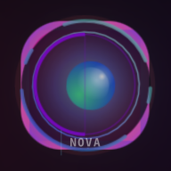

Kael DomnnuS · Organização Viva v2
🧬
✦
◎
Dual.Infodose · Cinemático
Iniciando Roda-Viva. Pulso simbiótico detectado. Presença reconhecida.
Config IA · OpenRouter & Tema
API Key (sk-or-...)
Modelo
gpt-oss· free
ring-2.6-1t:free
openrouter/free
nvidia/nemotron:free
Custom (digitar abaixo)
Modelo custom (opcional)
Tema
Dark
Vibe
Medium
Salvar
Limpar
Nenhuma chave salva ainda.
➤
Ativar Dual.Infodose
Defina o seu nome e o nome-base do assistente para personalizar as respostas.
Ativar